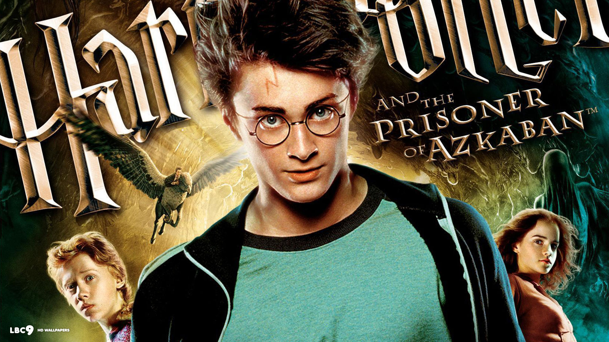

| |
Harry Potter and the Philosopher's Stone is the first novel in the Harry Potter series and J. K. Rowling's debut novel, first published in 1997 by Bloomsbury. It was published in the United States as Harry Potter and the Sorcerer's Stone by Scholastic Corporation in 1998. The plot follows Harry Potter, a young wizard who discovers his magical heritage as he makes close friends and a few enemies in his first year at the Hogwarts School of Witchcraft and Wizardry. With the help of his friends, Harry faces an attempted comeback by the dark wizard Lord Voldemort, who killed Harry's parents, but failed to kill Harry when he was just a year old. |
|
Harry Potter and the Chamber of Secrets is the second novel in the Harry Potter series, written by J. K. Rowling. The plot follows Harry's second year at Hogwarts School of Witchcraft and Wizardry, during which a series of messages on the walls of the school's corridors warn that the "Chamber of Secrets" has been opened and that the "heir of Slytherin" would kill all pupils who do not come from all-magical families. These threats are found after attacks which leave residents of the school "petrified" (frozen like stone). Throughout the year, Harry and his friends Ron Weasley and Hermione Granger investigate the attacks. |
|  |
Harry Potter and the Prisoner of Azkaban is the third novel in the Harry Potter series, written by J. K. Rowling. The book follows Harry Potter, a young wizard, in his third year at Hogwarts School of Witchcraft and Wizardry. Along with friends Ron Weasley and Hermione Granger, Harry investigates Sirius Black, an escaped prisoner from Azkaban who they believe is one of Lord Voldemort's old allies. |
 |
Harry Potter and the Goblet of Fire is the fourth novel in the Harry Potter series, written by British author J. K. Rowling. It follows Harry Potter, a wizard in his fourth year at Hogwarts School of Witchcraft and Wizardry and the mystery surrounding the entry of Harry's name into the Triwizard Tournament, in which he is forced to compete. |
|
Harry Potter and the Order of the Phoenix is the fifth novel in the Harry Potter series, written by J. K. Rowling. It follows Harry Potter's struggles through his fifth year at Hogwarts School of Witchcraft and Wizardry, including the surreptitious return of the antagonist Lord Voldemort, O.W.L. exams, and an obstructive Ministry of Magic. The novel was published on 21 June 2003 by Bloomsbury in the United Kingdom, Scholastic in the United States, and Raincoast in Canada. Five million copies were sold in the first 24 hours of publication.[1] It is the longest book of the series. |
|
Harry Potter and the Half-Blood Prince is the sixth and penultimate novel in the Harry Potter series, written by British author J. K. Rowling. Set during protagonist Harry Potter's sixth year at Hogwarts, the novel explores the past of Harry's nemesis, Lord Voldemort, and Harry's preparations for the final battle against Voldemort alongside his headmaster and mentor Albus Dumbledore. |
 |
Harry Potter, The Chosen One has become the hunted one as Voldemort's followers look for Harry with orders to bring him to the Dark Lord…alive.
Harry's only hope is to find the Horcruxes before Voldemort finds him. But as he searches for clues, he uncovers an old and almost forgotten tale—the legend of the Deathly Hallows. And if the legend turns out to be true, it could give Voldemort the ultimate power he seeks. Little does Harry know that his future has already been decided by his past when, on that fateful day, he became “the Boy Who Lived.” No longer just a boy, Harry Potter is drawing ever closer to the task for which he has been preparing since the day he first stepped into Hogwarts: the ultimate battle with Voldemort. |
|
Harry Potter and the Deathly Hallows – Part 2 is a 2011 British-American fantasy film directed by David Yates and distributed by Warner Bros. Pictures.[4] It is the second of two cinematic parts based on the novel Harry Potter and the Deathly Hallows by J. K. Rowling.[5] The film, which is the eighth and final instalment in the Harry Potter film series, was written by Steve Kloves and produced by David Heyman, David Barron, and Rowling. It is the sequel to Harry Potter and the Deathly Hallows – Part 1. The story continues to follow Harry Potter's quest to find and destroy Lord Voldemort's Horcruxes in order to stop him once and for all. |